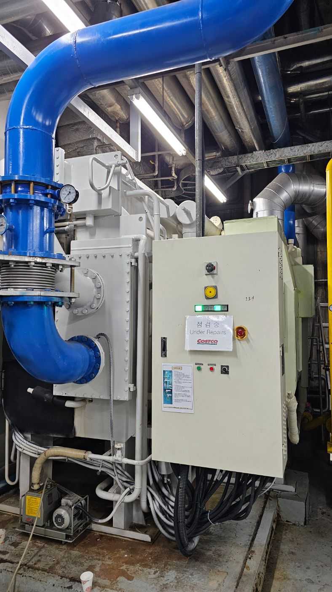

기계설비법에 따른 유지관리자 선임부터 연 1회 성능점검까지. 냉난방·공조·급배수 설비가 유지관리기준에 맞게 운영되는지 진단하고 기록을 체계적으로 관리합니다.

※ 성능점검 결과 보고서는 작성·보관 의무가 있으며, 유지관리자 미선임 시에도 과태료가 부과될 수 있습니다.
대상 건축물은 기계설비 유지관리자를 선임하고 신고해야 합니다. 선임 절차와 자격 요건을 검토해 누락 없이 진행하도록 지원합니다.
기계설비가 유지관리기준에 적합하게 작동하는지 성능을 점검합니다. 측정·진단 결과를 기록하고 개선이 필요한 항목을 명확히 제시합니다.
건물의 기계설비 전반을 진단합니다.
연면적·용도를 확인해 선임·점검 의무 적용 여부를 안내합니다.
설비별 성능을 측정·진단하고 기준 적합 여부를 확인합니다.
성능점검 결과서를 작성하고 법정 보관 요건을 충족합니다.
개선 항목을 연계하고 다음 점검 주기를 관리합니다.
연면적·용도만 알려주시면 의무 여부와 비용을 바로 확인해 드립니다.